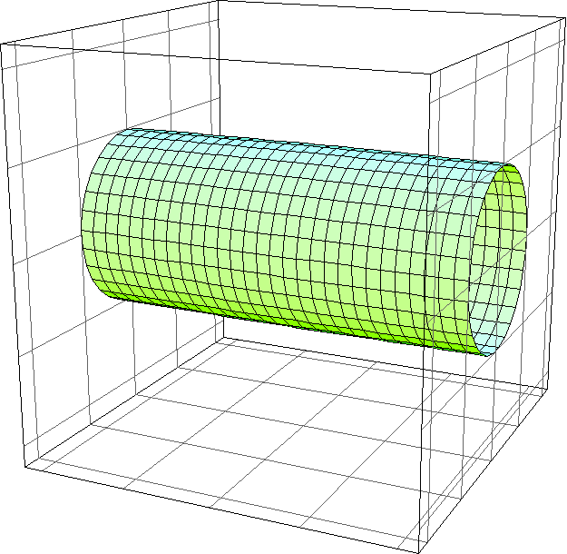
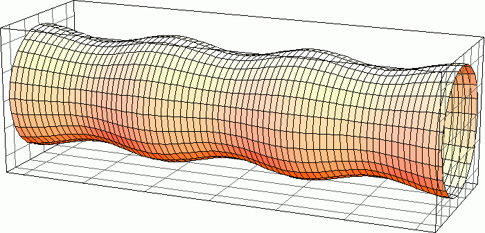

一般相対論では，物質と時空の曲率が互いに規定し合います．基本方程式は
\[
G_{\mu\nu}+\Lambda g_{\mu\nu}
=
\frac{8\pi G}{c^4}T_{\mu\nu}.
\]
この枠組みの中で，ブラックホール影，光子の捕獲，強重力場近傍の高エネルギー衝突，宇宙検閲仮説などを調べています．近年の研究では，有限距離から観測されるブラックホール影に含まれるパラメータ縮退や，Kerr-Newman ブラックホール影の一意性を扱っています．
black hole shadows
null geodesics
cosmic censorship
背景時空を古典的に扱い，その上を伝播する場を量子化すると，真空は時空や境界条件に依存する対象になります．典型的には，繰り込まれたエネルギー運動量テンソル
\[
\langle T_{\mu\nu}\rangle_{\mathrm{ren}}
\]
が，時空の安定性やバックリアクションを測る量になります．動的 Casimir 効果，境界条件の瞬間的変化，裸特異性やワームホール形成に動機づけられた粒子生成などを通じて，量子場が古典時空の特異な構造にどう反応するかを調べています．
dynamic Casimir effect
semiclassical gravity
boundary conditions
液柱がくびれて滴へ移る Rayleigh-Plateau 不安定性と，ブラックストリングが不安定化する Gregory-Laflamme 不安定性には深い類似があります．細い流体の有効方程式，界面の曲率駆動拡散，次元依存性を使って，この対応の構造を探ります．

4D相当の液柱平衡

曲率駆動拡散の発展
\[
\partial_t X = -\Delta_s H,
\qquad
H=\mathrm{const.}
\]
ここで \(H\) は平均曲率です．流体・膜・ブラックブレーンという異なる言葉で書かれる問題を，安定性と相図という共通の観点からつなぎます．
Rayleigh-Plateau
Gregory-Laflamme
large D
表面張力で支えられる液滴や液橋の静的な形は，体積制約のもとで面積を停留させる定平均曲率曲面として表されます．安定性は第二変分
\[
\delta^2 A \ge 0
\]
の符号で判定されます．境界を持つ高次元 CMC 超曲面を対象に，自己交差のない平衡形状の安定性を数値計算も援用しながら調べています．
constant mean curvature
stability
differential geometry
多数の変数と陰的な制約を持つ系では，次元解析も単純な消去問題ではなくなります．対数変数で次元関係と制約を線形代数として扱うと，独立な無次元量の数と冗長な量の消去が体系的に整理できます．
\[
A \log x = b,
\qquad
C \log x = d.
\]
この方向は，基礎物理だけでなく，工学教育や数理モデリングの道具としても有用です．
dimensional analysis
constraints
linear algebra